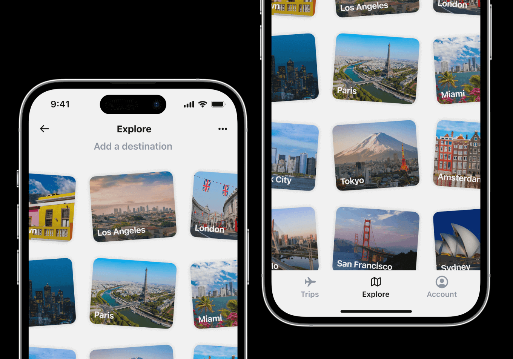
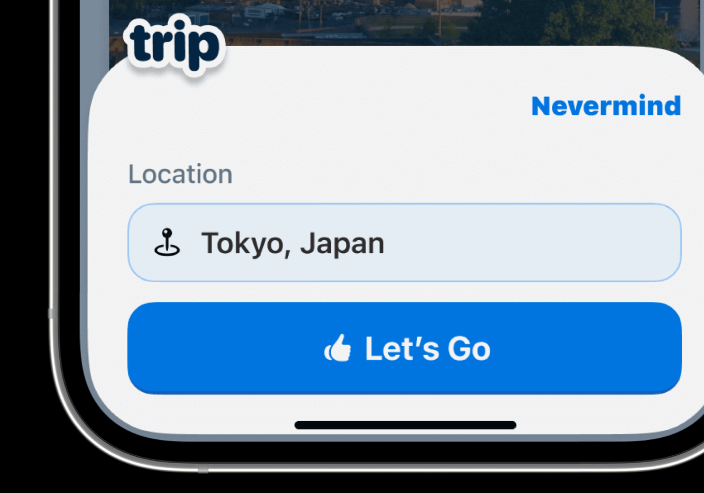
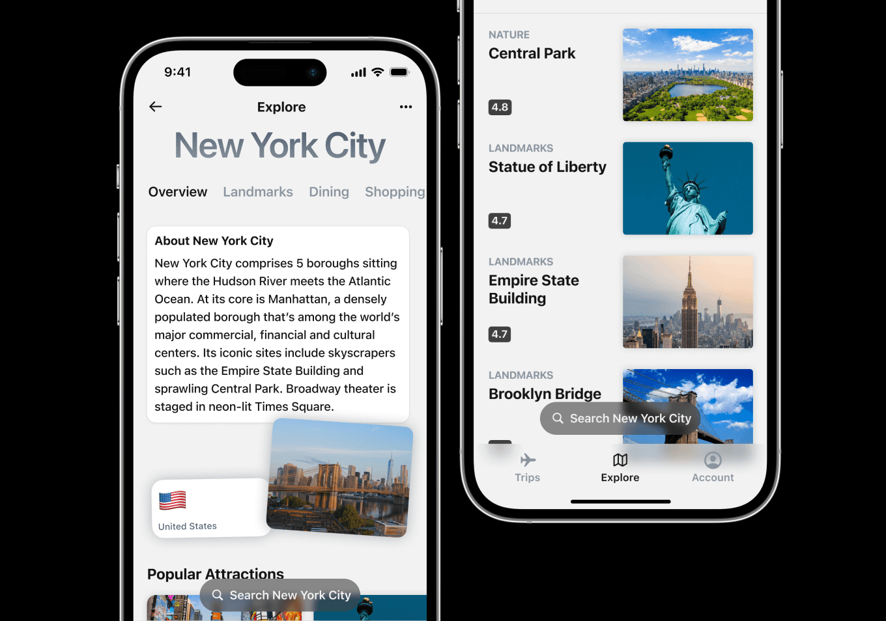
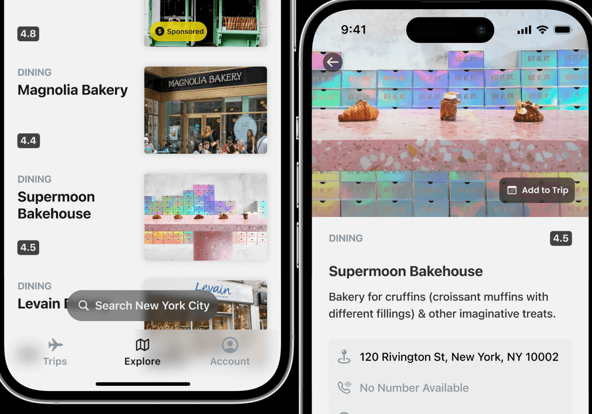
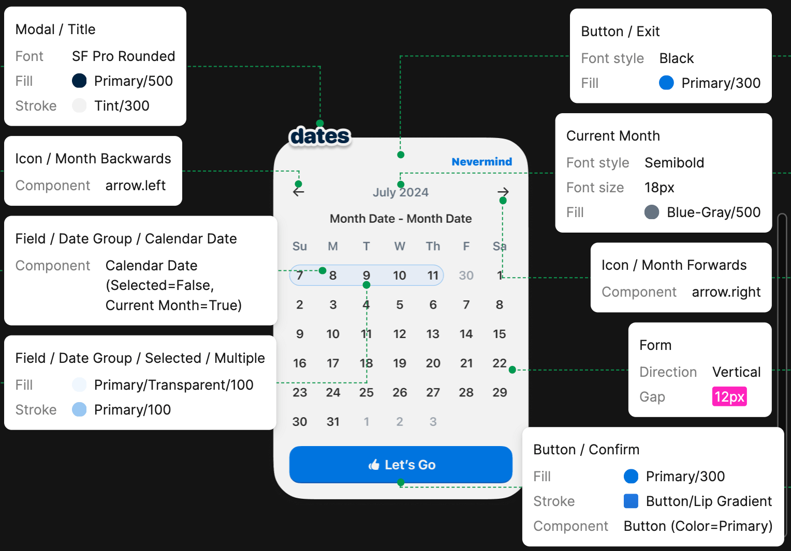
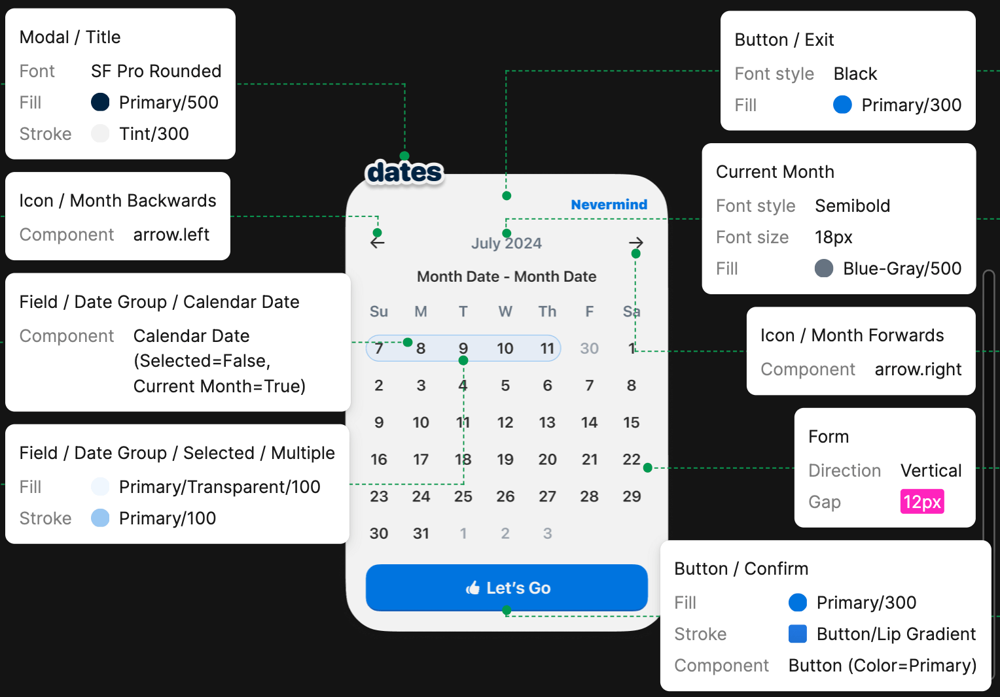
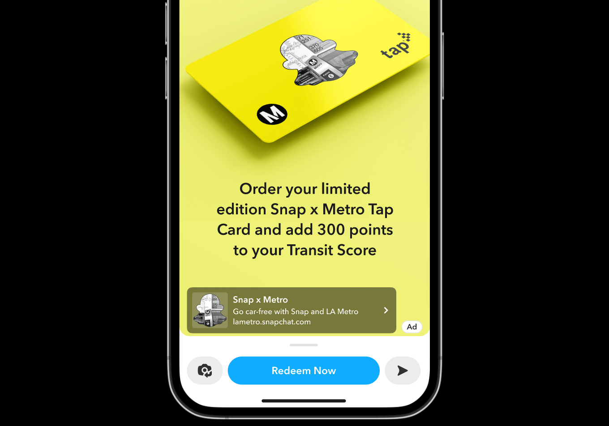
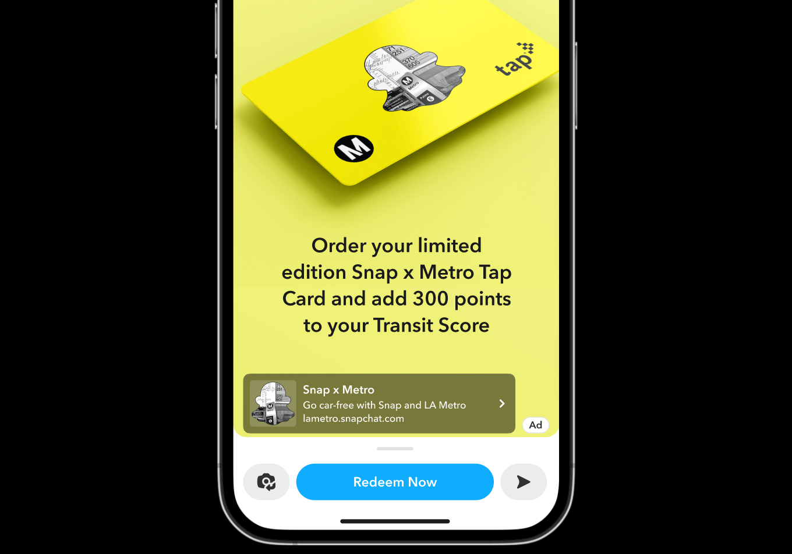

Chronacle
Since 2023
A trip planning app born from my desire for a more engaging experience organizing my future trips around the world.




Software Designer and Developer üßôüèæ‚Äç‚ôÇÔ∏è
34.0549° N, 118.2426° W (Los Angeles, CA)
Since 2023
A trip planning app born from my desire for a more engaging experience organizing my future trips around the world.
A short dive into my process building out the frontend for Chronacle.
 


Summer 2023
As a Design Intern at Snap Inc., I crafted a potential partnership with LA Metro that included a Snapchat feature aimed at incentivizing public transit usage.

 

Summer 2023
As a Design Intern at Snap Inc., I helped imagine a Snapchat feature addressing the unique challenges faced by underprivileged teens and young adults in their academic journeys.

Since Fall 2023
A mess-free recipe finding app.


I'm a software designer and developer in Los Angeles, California. My focus is on visual and interaction design for web applications and native mobile apps.
One night during my Sophomore year of undergrad, I had trouble finding an app that could tell me what to cook with the random ingredients in my apartment. Feeling a bit powerless, I decided I needed to learn how to design and develop digital tools I think people might need/use.
Adding a minor in Web Development and Design helped me get started; years later, I've since been able to apply many of the research, design, and development skills that felt so foreign to me in my kitchen that night.